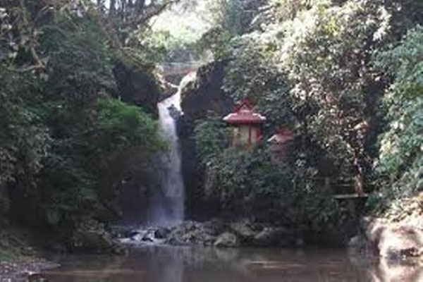

-

SELAMAT DATANG DI WISATA CURUG DAGO
Wisata Curug Dago adalah wisata air terjun di Bandung yang memiliki nilai sejarah tinggi. Curug dalam bahasa Sunda memiliki arti air terjun. Di Bandung sendiri memang terdapat banyak air terjun mengingat Bandung yang secara geografis dikelilingi oleh kawasan perbukitan. - 
SELAMAT DATANG DI WISATA CURUG DAGO
Wisata Curug Dago adalah wisata air terjun di Bandung yang memiliki nilai sejarah tinggi. Curug dalam bahasa Sunda memiliki arti air terjun. Di Bandung sendiri memang terdapat banyak air terjun mengingat Bandung yang secara geografis dikelilingi oleh kawasan perbukitan. -

SELAMAT DATANG DI WISATA CURUG DAGO
Wisata Curug Dago adalah wisata air terjun di Bandung yang memiliki nilai sejarah tinggi. Curug dalam bahasa Sunda memiliki arti air terjun. Di Bandung sendiri memang terdapat banyak air terjun mengingat Bandung yang secara geografis dikelilingi oleh kawasan perbukitan. -

SELAMAT DATANG DI WISATA CURUG DAGO
Wisata Curug Dago adalah wisata air terjun di Bandung yang memiliki nilai sejarah tinggi. Curug dalam bahasa Sunda memiliki arti air terjun. Di Bandung sendiri memang terdapat banyak air terjun mengingat Bandung yang secara geografis dikelilingi oleh kawasan perbukitan. -
SELAMAT DATANG DI WISATA CURUG DAGO
Wisata Curug Dago adalah wisata air terjun di Bandung yang memiliki nilai sejarah tinggi. Curug dalam bahasa Sunda memiliki arti air terjun. Di Bandung sendiri memang terdapat banyak air terjun mengingat Bandung yang secara geografis dikelilingi oleh kawasan perbukitan.
Wisata Curug Dago
Kota Bandung yang berada di bagian atas memang membuat ada begitu banyak tempat wisata yang indah yang bisa dinikmati oleh banyak orang yang ada disana. Tidak hanya orang dari dalam kota ini saja, bahkan orang dari luar kota pun berdatangan ingin menikmati banyaknya tempat wisata yang ada di Kota Bandung.
Artikel
Curug Dago memang masih belum banyak diketahui oleh masyarakat luas karena tempatnya yang tersembunyi dan kurangnya publikasi atau sosialiasi terhadap wisata alam yang indah ini.

Rahasia Tersembunyi
Curug Dago Bandung
Apa Yang Menarik Dari
Curug Dago

Curug Dago Bandung
Riwayatmu Kini
GALERY

TESTIMONI
Keindahan dan jejak sejarah yang tersembunyi membuat banyak orang terkagum dengan rahasia yang tersembunyi Curug Dago Bandung.


Lokasi dan Tarif Tiket
1. Lokasi Curug Dago
Jl. Dago Pojok, Dago, Coblong, Kota Bandung, Jawa Barat 40135
2. Tarif Tiket Masuk
Objek wisata air terjun Curug Dago dibuka mulai pukul 08.00 hingga pukul 17.00 wib atau jam 5 sore. Untuk harga tiket yang dikenakan oleh Curug Dago tidaklah mahal. Pengunjung hanya perlu mengeluarkan biaya Rp.15.000,- untuk tiket masuk dan Rp.5.000,- untuk biaya parkir. Biaya ini sudah termasuk biaya asuransi.
HUBUNGI KAMI
Kami mencari destinasi atau memiliki masukan baru? Silahkan hubungi kami
Beralamat : Jl. Dago Pojok, Dago, Coblong, Kota Bandung, Jawa Barat 40135 No.Telpon 085294049154


{kind=link}
{kind=link}
{kind=link}
{kind=link}